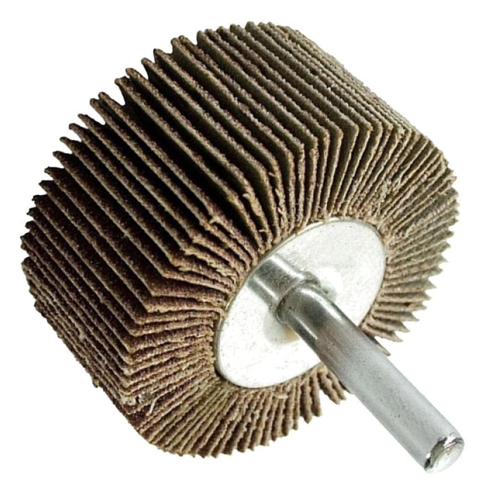

ABRF4020120

Grit: 120
Diameter: 40mm
Shaft: 6mm
Width: 20mm

This rotary flap wheel, measuring 40mm in diameter with a 20mm width and a 6mm steel shaft, is designed for precise surface finishing and blending tasks. Its 120 grit abrasive offers a finer touch, making it excellent for achieving smooth, polished surfaces on various materials like metal, wood, and plastic after initial shaping or coarser abrasion. The overlapping flap construction ensures consistent contact and even wear, continuously exposing fresh abrasive for a uniform finish without gouging or damaging the workpiece. Ideal for detail work, final finishing stages, and preparing surfaces for coatings, this flap wheel is a valuable tool for achieving high-quality results with drills or die grinders.
The 120 grit offers a good balance between material removal (though less aggressive than coarser grits) and the ability to create a smooth surface. The flexible flaps ensure consistent contact with the workpiece, preventing deep scratches and providing a uniform finish over contoured or irregular surfaces.